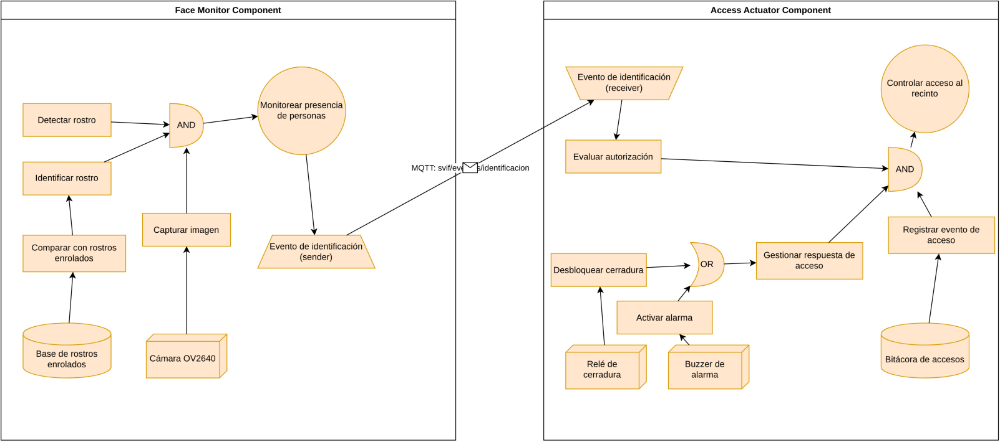

Constructos, relaciones, restricciones y mecanismos de representación de un lenguaje de dominio específico para sistemas ciberfísicos.
Propósito. Describir la arquitectura de un sistema ciberfísico a nivel PIM (independiente de plataforma), dentro del proceso MDD4CPS. Es el eslabón entre el modelo de objetivos (CIM / iStar 2.0) y el código (PSM / C++).
Qué permite representar. Componentes ciberfísicos con comportamiento periódico (percepción y actuación), acciones bajo demanda, recursos de hardware y software, y mensajería entre nodos físicos.
Contexto de uso. Transformación CIM → PIM en la herramienta aomdd4cps (Navarro et al., 2025), editando el diagrama en diagrams.net y serializándolo como XML (mxGraph). En este análisis se ilustra con SVIF — videovigilancia con identificación facial, dos nodos ESP32.
El dominio CPS incorpora nociones que en UML exigirían perfiles o extensiones. El DSL las expresa como constructos propios:
«Identificar un rostro cada 500 ms y publicar el evento»
— expresable sin comprometerse aún con una plataforma.
| Constructo | Tipo (XML) | Rol |
|---|---|---|
| CPComponent | cps_component | Nodo ciberfísico (contenedor) |
| OperationalGoal | operational_goal | Objetivo periódico «OnInterval» |
| Action | action | Tarea bajo demanda «OnDemand» |
| RefOperator | and/or_ref_operator | Refinamiento AND / OR |
| SWResource | sw_resource | Dato persistente (estructura) |
| HWResource | hw_resource | Recurso físico (pin / periférico) |
| CommThread | comm_thread | Emisor de mensajes |
| ListenerThread | listener_thread | Receptor de mensajes |
relation_from_to — arista dirigida de contención, refinamiento (operador → hijos) y uso (acción → recurso).
comm_relation — canal de mensaje entre componentes; transporta el dependum y se decora con el símbolo de sobre mail_symbol ✉.

La semántica del DSL está definida por traducción hacia un lenguaje destino (C++ / Arduino con FreeRTOS): cada constructo tiene un significado operacional preciso que la transformación PIM → PSM materializa.
| Constructo | Significado (interpretación) | Realización en el PSM |
|---|---|---|
| CPComponent | Unidad de despliegue autónoma (un nodo físico) | Sketch .ino + comm_utils.h + secrets.h |
| OperationalGoal | Comportamiento que se ejecuta cada interval_in_ms | Hilo periódico FreeRTOS con ese período |
| Action | Operación invocable bajo demanda con entradas/salidas | Función C++ con firma derivada de los parámetros |
| AND / OR operator | AND: todos los hijos se ejecutan · OR: se elige una rama | secuencia / condicional if / else |
| SWResource | Dato persistente estructurado del componente | struct tipada (p. ej. EnrolledFace) |
| HWResource | Punto de integración con el mundo físico | Comentario + pin (RELAY_PIN, BUZZER_PIN) |
| Comm / Listener | Publicación / recepción del dependum entre nodos | Hilos MQTT (publish / callback) con la struct del dependum |
¿Adecuado para el dominio? Sí para CPS pequeños–medianos: expresa periodicidad, recursos y mensajería como conceptos de primera clase y posterga la plataforma al nivel correcto. Su valor crece con el número de componentes y dependencias, donde el andamiaje de comunicación es lo más propenso a error si se escribe a mano.
Un DSL bien definido = las tres capas (abstracta + concreta + semántica) coherentes entre sí.
Referencias: